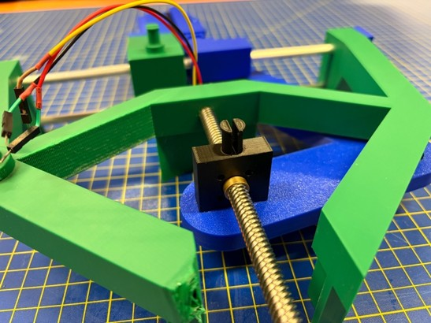

Projects → Robotic Gripper
Key numbers
| Force brief | Capable of ≥ 50 N, never apply > 50 N (15 N egg setpoint) |
| Axial screw thrust | 369.5 N total (184.7 N per finger link) |
| Delivered finger force | 121.9 N closed → 164.8 N near full open (2.44× margin at worst case) |
| Controlled egg force | 13.4 N recorded against 15 N software stop |
| Jaw opening & stroke | 105 mm measured (95 mm CAD) over 36.5 mm nut travel |
| Full close time | 4.89 s calculated at 7.47 mm/s (~5 s onto egg, 7–8 s full stroke) |
| Drivetrain & materials | Quad-start T8 screw (8 mm lead, η ≈ 0.588), PLA structure, TPU pad, PA-6 coupler |
| Option | Jaw motion | Assessment |
|---|---|---|
| Rotational scissor | Pivots along an arc | |
| 4-bar linkage | Parallel along a shallow arc | |
| Lead screw + bell-crank (chosen) | Linear translation on guide rods |
| Option | Why chosen / rejected |
|---|---|
| T8 lead screw + brass nut (chosen) | |
| Rack & pinion / spur gears | |
| Cam / belt drive |
| Material | Role & reasoning |
|---|---|
| PLA (structure) | |
| TPU (Finger 2 pad) | |
| PA-6 Nylon (coupler) |
Fscrew = 2π · η · T / L = 2π × 0.588 × 0.8 / 0.008 = 369.45 N total (184.7 N per arm)
x = dscrew − 30.27 mm | Ftip = Farm × (Δxnut / Δyfinger)
| Opening (mm) | Per finger (mm) | Nut travel x (mm) | F per finger (N) | F combined (N) |
|---|---|---|---|---|
| 90 | 45.0 | 34.27 | 164.78 | 329.55 |
| 75 | 37.5 | 27.81 | 156.65 | 313.29 |
| 50 | 25.0 | 17.77 | 143.35 | 286.69 |
| 25 | 12.5 | 8.53 | 132.26 | 264.53 |
| 0 (closed) | 0 | 0 | 121.92 | 243.84 |
Full 20-step stroke table (Excel model)
| Opening (mm) | y (mm) | Screw datum (mm) | x (mm) | F/finger (N) | F total (N) | Step t (s) |
|---|---|---|---|---|---|---|
| 95 | 47.5 | 66.77 | 36.50 | - | - | 0.30 |
| 90 | 45.0 | 64.54 | 34.27 | 164.78 | 329.55 | 0.29 |
| 85 | 42.5 | 62.35 | 32.08 | 161.82 | 323.64 | 0.29 |
| 80 | 40.0 | 60.20 | 29.93 | 158.86 | 317.73 | 0.28 |
| 75 | 37.5 | 58.08 | 27.81 | 156.65 | 313.29 | 0.28 |
| 70 | 35.0 | 56.00 | 25.73 | 153.69 | 307.38 | 0.27 |
| 65 | 32.5 | 53.96 | 23.69 | 150.74 | 301.47 | 0.27 |
| 60 | 30.0 | 51.95 | 21.68 | 148.52 | 297.04 | 0.26 |
| 55 | 27.5 | 49.98 | 19.71 | 145.56 | 291.13 | 0.26 |
| 50 | 25.0 | 48.04 | 17.77 | 143.35 | 286.69 | 0.26 |
| 45 | 22.5 | 46.13 | 15.86 | 141.13 | 282.26 | 0.25 |
| 40 | 20.0 | 44.25 | 13.98 | 138.91 | 277.83 | 0.25 |
| 35 | 17.5 | 42.40 | 12.13 | 136.70 | 273.39 | 0.24 |
| 30 | 15.0 | 40.59 | 10.32 | 133.74 | 267.48 | 0.24 |
| 25 | 12.5 | 38.80 | 8.53 | 132.26 | 264.53 | 0.24 |
| 20 | 10.0 | 37.04 | 6.77 | 130.05 | 260.09 | 0.23 |
| 15 | 7.5 | 35.31 | 5.04 | 127.83 | 255.66 | 0.23 |
| 10 | 5.0 | 33.60 | 3.33 | 126.35 | 252.70 | 0.23 |
| 5 | 2.5 | 31.92 | 1.65 | 124.14 | 248.27 | 0.22 |
| 0 | 0 | 30.27 | 0 | 121.92 | 243.84 | - |
| Total calculated close time | 4.89 s | |||||
vnut = 56 rpm × 8 mm / 60 = 7.47 mm/s → tclose = 36.5 / 7.47 = 4.89 s
Worst-case capability = 121.9 N/finger (2.44× over 50 N brief) | Egg limit = 15 N (13.4 N measured)
Finger root bending (164.8 N × 55 mm, Z ≈ 1000 mm³): σ = 9.1 MPa vs 30 MPa knocked-down PLA → FoS = 3.3
Worst-case capability = 121.9 N/finger (2.44× over 50 N brief) | Egg limit = 15 N (13.4 N measured)
Finger root bending (164.8 N × 55 mm, Z ≈ 1000 mm³): σ = 9.1 MPa vs 30 MPa knocked-down PLA → FoS = 3.3
| Parameter | Calculated | Measured |
|---|---|---|
| Grip force on egg | 121.9 N/finger capability | 13.4 N (15 N limit, 60–80 N verified privately) |
| Max jaw opening | 95 mm (36.5 mm nut stroke) | 105 mm (~40 mm manual datum stroke) |
| Close time | 4.89 s (100% speed) | ~5 s onto egg, 7–8 s full stroke (40% speed) |




| Test | Target | Result | Outcome |
|---|---|---|---|
| Egg detection (RE-1) | IR peak in 10–15 cm range | Detected reliably | Pass |
| Jaw opening (RE-2) | ≥ 100 mm | 105 mm measured | Pass |
| Force regulation (RE-3) | 10–15 N under control | 12.2 N initial test | Pass |
| Closing time (RE-4) | 4.89 s calculated | ~5 s onto egg, 7–8 s full stroke (40% speed cap) | Fail |
| Egg grip (RE-5) | < 15 N, no damage | 13.4 N, no damage | Pass |
| Hold under lift (RE-6) | No slip during pull | Held securely | Pass |
| Auto close (RE-7) | Detect and grip unaided | Worked as intended | Pass |
| Auto reopen (RE-8) | Return to zero when removed | IR beam clipped closed jaws | Fail |
| Manual control (RE-9) | Front-panel open/close | Worked reliably | Pass |
| Emergency stop (RE-10) | Immediate halt & exit | Stopped cleanly | Pass |
| Repeatability | Consistent cycles | ~10 cycles (manual reopen) | Partial |